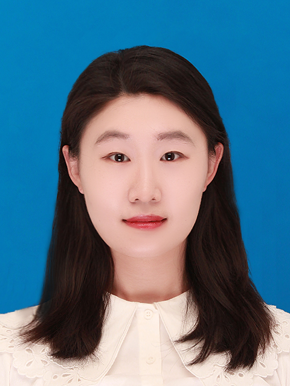
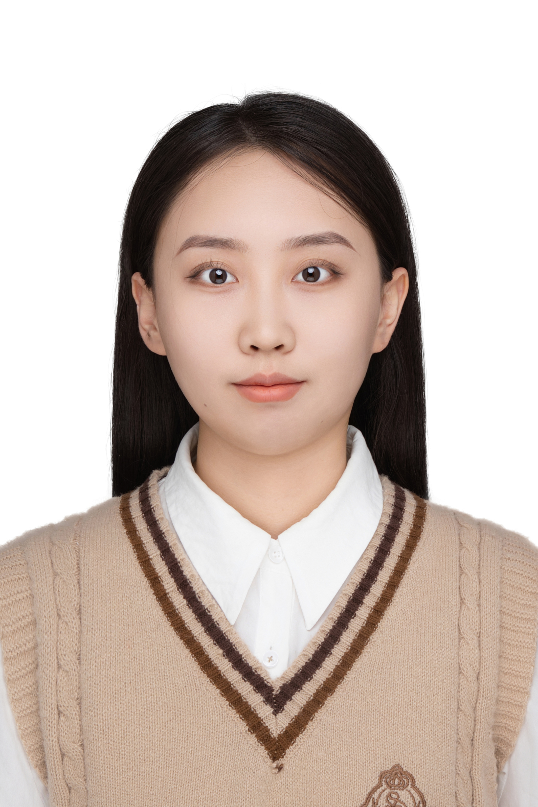
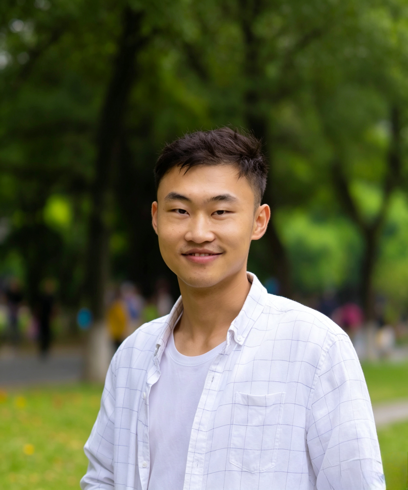

Who We Are
Professor at School of Medicine, Westlake University
He earned his Bachelor of Science in Physiology from Nanjing University and a dual M.D./Ph.D. degree in Clinical Medicine and Immunology from University of Illinois Urbana-Champaign. He served as a Clinical Resident at Mount Sinai Hospital in New York City, after which he went to Harvard Medical School as a Research Fellow. In 2006, he returned to China as a foreign expert appointed by the Ministry of Science and Technology. He has since held positions including Director of the Laboratory of Molecular Targeted Therapy at Sun Yat-Sen University Cancer Center, Vice President of Dalian Medical University, and Dean of the Institute of Cancer Stem Cell Research.


